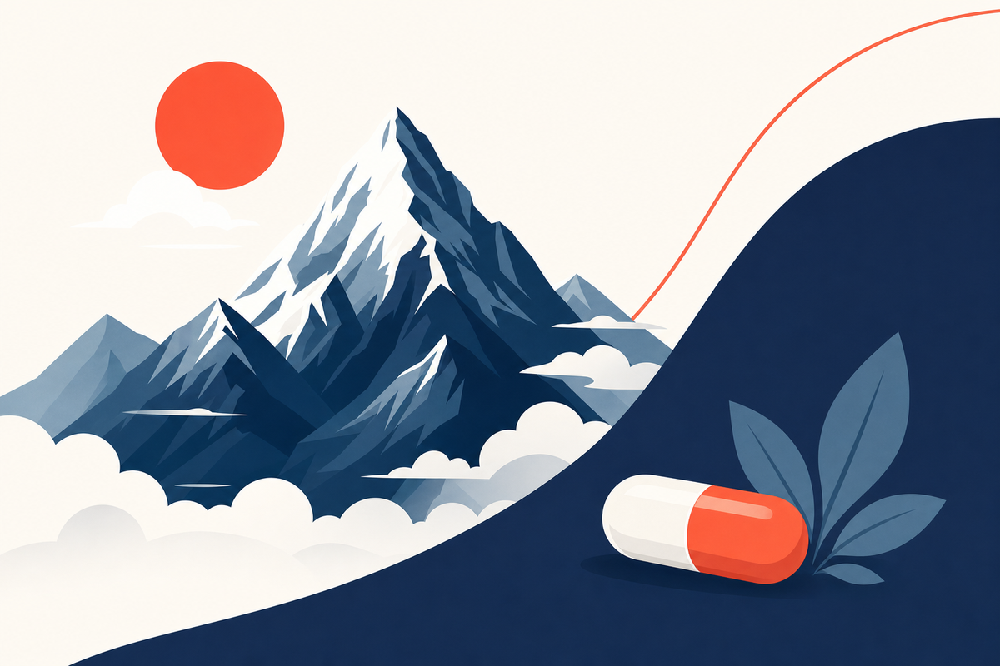
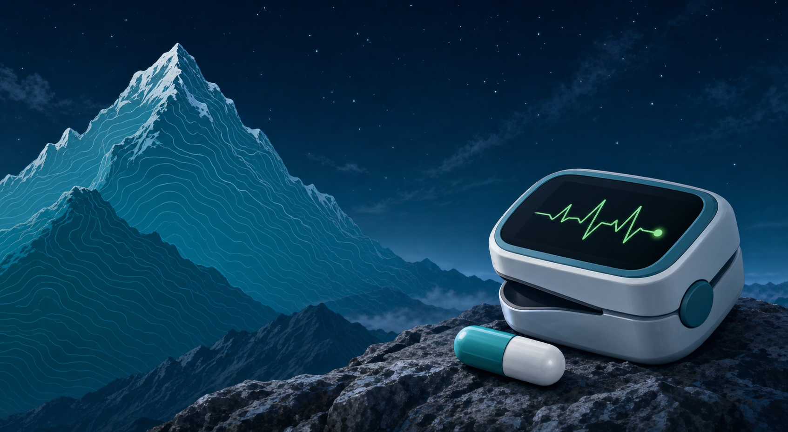
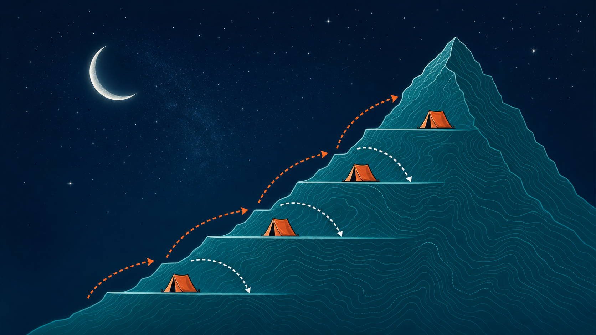

Key Takeaways
- Altitude sickness (AMS) typically begins above 2,500 m (8,200 ft) and is driven by ascent rate, not fitness level — even elite athletes are susceptible.[1]
- The 2024 Wilderness Medical Society guidelines recommend a maximum sleeping altitude increase of 500 m per night above 3,000 m, with a rest day every 3–4 days — "climb high, sleep low" remains the standard.[1]
- Acetazolamide 125 mg twice daily, started the night before ascent, reduces AMS incidence by approximately 50% — this is first-line pharmacologic prevention for moderate- and high-risk travelers.[3]
- Most people with a sulfa antibiotic allergy can safely take acetazolamide; the WMS 2024 guidelines reserve the contraindication for prior anaphylaxis or Stevens-Johnson syndrome history only.[6]
- HACE (cerebral edema) and HAPE (pulmonary edema) are life-threatening emergencies requiring immediate descent — no medication substitutes for descending to lower altitude.[9]
- Ginkgo biloba has largely negative clinical trial evidence and is not recommended by current guidelines; acetazolamide has strong evidence behind it.[8]


What Altitude Sickness Is
Altitude sickness is not a single disease. It is a spectrum of conditions that develop when the body ascends faster than it can adapt to reduced atmospheric oxygen. At sea level, you breathe air at roughly 760 mmHg pressure, and oxygen makes up about 21% of that. Climb to 3,657 m (12,000 ft) — the elevation of many popular trekking destinations — and the same 21% of oxygen is now delivered at far lower pressure. The result is arterial hypoxemia, and the body's response to that hypoxemia drives every symptom in the altitude illness spectrum.[1]
Three distinct syndromes define the spectrum. Acute Mountain Sickness (AMS) is the most common: headache accompanied by at least one of nausea, fatigue, dizziness, or sleep disturbance. It is generally self-limiting if the patient stops ascending and rests. High Altitude Cerebral Edema (HACE) represents the severe end of AMS — cerebral vasogenic edema producing ataxia, altered consciousness, and without prompt treatment, coma and death. High Altitude Pulmonary Edema (HAPE) is a distinct syndrome involving abnormal fluid accumulation in the lungs, independent of the AMS/HACE pathway. HAPE is the leading cause of altitude-related death and can develop without significant prior AMS symptoms.[2]
Current evidence shows that approximately 25% of travelers sleeping above 2,500 m will develop some degree of AMS, rising to 50–85% at elevations above 4,500 m depending on the ascent rate.[1] The good news: AMS is largely preventable. The tools available — gradual ascent, pharmacologic prophylaxis, and early recognition — are accessible, inexpensive, and well supported by clinical trial evidence. The challenge is knowing which tool to use, when to use it, and — critically — when altitude illness has crossed into territory that requires descent rather than medication.
Who Gets Altitude Sickness
Individual susceptibility to AMS varies widely and is not predicted by fitness, age, sex, or prior experience at lower elevations. A veteran marathoner and a sedentary tourist face similar baseline risk at a given altitude and ascent rate. The primary determinants of AMS risk are the altitude reached, how fast you ascend, and prior personal history of AMS — which is the strongest individual predictor.[1]
The 2024 WMS risk stratification framework categorizes travelers into three groups based on planned itinerary and prior history:
- Low risk: No prior AMS history and ascending below 2,800 m in one day, or any itinerary allowing gradual ascent over more than 2 days to 2,500–3,000 m. Pharmacologic prophylaxis typically not needed.
- Moderate risk: Prior AMS and ascending to 2,500–2,800 m in one day, or no prior AMS history but ascending above 2,800 m in a single day, or ascending more than 500 m per night above 3,000 m. Consider acetazolamide prophylaxis.
- High risk: Prior AMS ascending above 2,800 m in one day, prior history of HACE or HAPE, any ascent above 3,500 m in a single day, or ascending more than 500 m/night above 3,500 m. Acetazolamide prophylaxis strongly recommended; consider dexamethasone for very high-risk profiles.[1]
Beyond ascent rate and history, several factors raise baseline risk. Travelers with a prior HAPE episode have high susceptibility to recurrence — HAPE prophylaxis with nifedipine is specifically recommended for this group. Travelers with underlying pulmonary hypertension face elevated risk even at moderate altitudes. Sickle cell trait — not just sickle cell disease — confers increased risk of vaso-occlusive crisis and splenic infarction at altitude, particularly above 4,000 m.[14]
One consistently surprising finding in the literature: physical fitness does not protect against AMS. Highly conditioned athletes often ascend faster precisely because their fitness allows it — and rapid ascent is the primary driver of AMS. Susceptibility to AMS appears to be substantially genetically determined, with variation in hypoxic ventilatory response playing a role that cannot be trained away.
Recognition: AMS Symptoms and the Lake Louise Score
AMS begins with headache — and that distinction matters. The 2018 revised Lake Louise Acute Mountain Sickness Score requires headache as a mandatory criterion. The headache of AMS is typically bifrontal or global, worsened by exertion, bending forward, or lying flat, and often described as similar to a hangover headache. A traveler who develops headache above 2,500 m within 6–12 hours of ascent should be evaluated for AMS.[10]
The 2018 Lake Louise Score uses four symptom domains, each rated 0–3:
- Headache (0 = none; 3 = severe/incapacitating)
- Gastrointestinal symptoms — poor appetite, nausea, or vomiting
- Fatigue and/or weakness
- Dizziness/lightheadedness
A diagnosis of AMS requires a total score of ≥3, with at least 1 point coming from the headache domain. Mild AMS: 3–5 points. Moderate: 6–9. Severe: 10–12. The 2018 revision removed changes in mental status from the AMS scoring criteria — any ataxia or altered consciousness now indicates HACE, not severe AMS, and requires immediate descent.[10]
Seek immediate descent if any of these develop: loss of coordination (unable to walk a straight line), confusion or altered mental status, coughing with frothy or pink-tinged sputum, breathlessness at rest, cyanosis (blue lips or fingernails), or inability to carry out normal activities. These are the hallmarks of HACE and HAPE — conditions that can become fatal within hours.
Sleep disturbance at altitude — common above 3,000 m — does not count toward the Lake Louise Score and alone does not indicate AMS. Cheyne-Stokes breathing (periodic breathing with short apneas during sleep) is nearly universal above 4,000 m and is a physiological response to hypoxemia, not pathological. It can be confused with AMS but is distinguished by absence of headache or other AMS criteria.
Prevention: Acclimatization Rules First
Gradual ascent is the most important altitude sickness prevention strategy — more important than any medication. The Wilderness Medical Society 2024 guidelines give gradual ascent a strong recommendation with moderate-quality evidence. Pharmacologic prophylaxis is an adjunct, not a replacement, for proper acclimatization.[1]
The practical rules for itinerary planning above 3,000 m:
- Maximum sleeping altitude gain: No more than 500 m (1,640 ft) per night once above 3,000 m
- Rest days: Plan one rest day (no sleeping altitude gain) every 3–4 days above 3,000 m
- Intermediate acclimatization: Spending 2–3 nights at 2,450–2,750 m before proceeding higher markedly reduces AMS risk — for example, spending a night at Denver (1,600 m) before proceeding to Colorado ski resorts above 2,800 m[2]
- Symptom rule: Never ascend to a higher sleeping altitude while experiencing any altitude illness symptoms, no matter how mild they seem
"Climb high, sleep low" is one of the most evidence-supported principles in altitude medicine. Daytime excursions to higher elevations — above the planned sleeping altitude — promote acclimatization without the overnight hypoxemic stress that drives AMS. A team can trek to 4,500 m during the day and return to camp at 3,800 m for sleep, gaining the acclimatization stimulus while reducing overnight risk. This approach is standard practice in Himalayan expedition medicine and applies equally to recreational trekkers.[12]

The "climb high, sleep low" strategy: daily excursions reach higher elevations while sleeping camps remain lower, allowing progressive acclimatization without overnight hypoxemic stress.
Hydration supports acclimatization by replacing respiratory fluid losses — you breathe faster at altitude, and each breath exhales more moisture. Drink enough to maintain light-colored urine. That said, forced overhydration does not accelerate acclimatization and carries its own risk of hyponatremia in extreme cases. The standard advice to "drink plenty of water" is correct as a comfort measure; it is not a pharmacological intervention for AMS.
Alcohol and sedating medications (benzodiazepines, sleep aids including antihistamines such as diphenhydramine) blunt the hypoxic ventilatory response — the body's primary mechanism for adapting to reduced oxygen. Alcohol use on the first night at a new altitude is consistently associated with worse AMS scores the following morning. This is not a moralizing prohibition; it is direct mechanism. Sedatives suppress the drive to breathe more deeply in response to low oxygen, worsening overnight hypoxemia.
Exercise on the first 1–2 days at a new altitude should be moderate, not intense. Vigorous exercise raises oxygen demand at exactly the time when the body is still calibrating its response to altitude. Light walking, stretching, and easy activity are fine; maximum-intensity training in the first 48 hours at a new elevation is counterproductive and associated with increased AMS.
Pharmacologic Prevention
Acetazolamide (Diamox) — First-Line
Acetazolamide remains the best-studied and most effective medication for AMS prevention. Its mechanism is elegant: by inhibiting carbonic anhydrase in the kidneys, it causes bicarbonate excretion, producing a mild metabolic acidosis. That acidosis stimulates breathing — specifically, it increases the hypoxic ventilatory response, causing the traveler to breathe more deeply and more often, raising blood oxygen levels and accelerating the physiological acclimatization process.[4]
Standard dosing: 125 mg orally twice daily (every 12 hours). Start the night before ascent. Continue for 2 days at the target altitude, or longer if ascent continues. The Basnyat 2003 randomized controlled trial — conducted in the Everest region of Nepal at elevations 4,243–4,937 m — established 125 mg BID as effective, achieving a 50.6% relative risk reduction in AMS versus placebo (AMS rate: 12.2% vs 24.7%, NNT = 8).[3] A subsequent 2021 meta-analysis of 22 RCTs confirmed that 125, 250, and 375 mg BID all significantly reduce AMS, with no statistically significant dose-response difference between 125 mg and 250 mg — supporting 125 mg as the recommended starting dose.[4]
For travelers weighing more than 100 kg, or for high-risk ascent profiles above 5,000 m, the 2024 WMS guidelines allow consideration of 250 mg BID. Pediatric dosing is 1.25 mg/kg/dose every 12 hours, maximum 125 mg/dose.
Side effects are common but generally tolerable: tingling or numbness in the hands, feet, and lips (paresthesia) occurs in the majority of users and is the mechanism of action — not an allergic reaction. Increased urinary frequency is expected. Carbonated beverages taste flat due to carbonic anhydrase inhibition. These effects resolve quickly after stopping the medication.
The Sulfa Allergy Question
One of the most common clinical questions about acetazolamide: "Can I take it if I'm allergic to sulfa drugs?" The current evidence strongly supports that most patients with a history of sulfa antibiotic allergy can safely use acetazolamide. Here is why.
Sulfonamide antibiotics (trimethoprim-sulfamethoxazole, sulfadiazine) contain an aromatic amine group at the N4 position that is responsible for most hypersensitivity reactions. Acetazolamide is a non-antibiotic sulfonamide that lacks this aromatic amine group. The pharmacological basis for cross-reactivity is therefore structurally absent. A 2011 case series published in the Archives of Neurology confirmed that patients with documented sulfonamide antibiotic allergy (including rash) tolerated acetazolamide without adverse reactions.[6] A 2004 review similarly found no clinical or pharmacological evidence supporting likely cross-reaction between acetazolamide and sulfonamide antibiotics.[7]
The WMS 2024 guidelines maintain a narrow contraindication: prior anaphylaxis to any sulfonamide medication, or a history of Stevens-Johnson syndrome. A simple rash, urticaria, or GI intolerance from a sulfa antibiotic does not contraindicate acetazolamide use. Patients in this situation should discuss their specific allergy history with a physician before travel — but most will be cleared to use it.[1]
Dexamethasone
Dexamethasone is effective for both preventing and treating AMS and HACE. A pooled analysis showed that dexamethasone kept 62% of patients free from AMS versus 26% in placebo groups (RR 2.50, 95% CI 1.71–3.66).[11] Prevention dose: 2 mg every 6 hours, or 4 mg every 12 hours, starting on the day of ascent.
The critical distinction from acetazolamide: dexamethasone does not facilitate acclimatization. It suppresses the inflammatory response to hypoxemia, masking symptoms without helping the body adapt. If stopped at altitude before acclimatization is complete, rebound AMS can occur. For this reason, dexamethasone is generally reserved for: travelers who cannot tolerate acetazolamide, very high-risk situations (military/rescue personnel being airlifted above 3,500 m), active treatment of AMS when descent is delayed, and emergency treatment of HACE.[12]
Ibuprofen
The Altitude Sickness in Climbers and Efficacy of NSAIDs Trial (ASCENT), published in 2012, found that ibuprofen 600 mg three times daily reduced AMS incidence versus placebo (43% vs 69%; OR 0.3; NNT 3.9).[5] The WMS 2024 guidelines include ibuprofen as a prevention option with a weak recommendation and moderate-quality evidence — intended for travelers who are unable or unwilling to use acetazolamide or dexamethasone. A more recent head-to-head trial showed ibuprofen inferior to acetazolamide for AMS prophylaxis, so ibuprofen is best positioned as an alternative, not a first choice. Known concerns about NSAID-related GI bleeding and renal dysfunction at altitude (dehydration + ibuprofen combination) are relevant for longer durations.[1]
Ginkgo Biloba — Negative Evidence
Ginkgo biloba preparations are widely marketed for altitude sickness prevention in consumer contexts. The clinical evidence does not support this use. A rigorous 2004 randomized double-blind trial in Himalayan trekkers found ginkgo biloba no different from placebo for AMS prevention. When combined with acetazolamide, ginkgo slightly increased the risk of headache (NNH = 9).[8] The WMS 2024 guidelines do not recommend ginkgo biloba. Travelers using it for altitude prevention should be counseled that the evidence does not support benefit, and it should not replace proven strategies.
Combination Strategies
For very high-risk travelers — history of HACE, ascending above 5,000 m rapidly, prior rescue operations — combining acetazolamide with standby dexamethasone is reasonable. Acetazolamide is taken prophylactically; dexamethasone is carried and used only if symptoms develop and descent is not immediately possible. This is standard practice in expedition medicine and is endorsed by WMS guidelines for high-risk profiles.
Pharmacologic Prevention — Evidence Comparison
| Medication | Mechanism | Prevention Dose | Evidence Level | Main Side Effects | Best For |
|---|---|---|---|---|---|
| Acetazolamide (Diamox) | Carbonic anhydrase inhibitor → metabolic acidosis → increased ventilatory drive → accelerates acclimatization | 125 mg PO BID, starting night before ascent; continue 2 days at target altitude | Strong recommendation, high-quality evidence | Paresthesia (expected), polyuria, dysgeusia with carbonated drinks | First-line for all moderate- and high-risk travelers |
| Dexamethasone | Corticosteroid → reduces cerebral vasogenic edema, suppresses inflammatory hypoxic response (does NOT facilitate acclimatization) | 2 mg PO q6h or 4 mg PO q12h starting day of ascent | Strong recommendation, high-quality evidence | Rebound AMS if stopped at altitude, insomnia, GI upset, hyperglycemia | High-risk travelers who cannot use acetazolamide; emergency AMS/HACE treatment |
| Ibuprofen | COX inhibition → reduces prostaglandin-mediated cerebral vasodilation contributing to altitude headache | 600 mg PO TID starting day before ascent | Weak recommendation, moderate-quality evidence | GI irritation, renal risk in dehydrated travelers, does not facilitate acclimatization | Alternative when acetazolamide/dexamethasone contraindicated or not tolerated |
| Ginkgo Biloba | Proposed: antioxidant and vasodilatory effects (mechanism not established for altitude) | N/A — not recommended | Not recommended — negative evidence | May increase headache when combined with acetazolamide | Not recommended; evidence does not support use for AMS prevention |
When Altitude Sickness Becomes an Emergency: HACE and HAPE
AMS is uncomfortable; HACE and HAPE are potentially fatal. Understanding the distinction — and acting on it immediately — is the most important altitude medicine skill any traveler can develop.
High Altitude Cerebral Edema (HACE)
HACE is AMS that has crossed into neurological territory. The defining features are ataxia (unsteady gait — test by asking the person to walk a straight line heel-to-toe) and altered consciousness (confusion, severe fatigue, drowsiness, or any behavioral change). Either finding in a person at altitude is a HACE emergency until proven otherwise.[9]
HACE management:
- Descent immediately — aim for at least 300–1,000 m; continue until symptoms improve. This is non-negotiable.
- Dexamethasone 8 mg immediately (oral, intramuscular, or intravenous), followed by 4 mg every 6 hours — the drug of choice for HACE. It reduces cerebral edema and buys time while descent is being organized.
- Supplemental oxygen targeting SpO2 above 90%, if available.
- Portable hyperbaric chamber (Gamow bag) if descent is physically impossible — inflate the patient in the bag to simulate descent to lower elevation as a temporizing measure.
Dexamethasone helps manage HACE symptoms; it does not treat the underlying cause. Medication is given while preparing for and during descent — not instead of descent.
High Altitude Pulmonary Edema (HAPE)
HAPE is the leading cause of altitude-related death. It is not simply "fluid on the lungs from exertion" — it results from hypoxic pulmonary vasoconstriction that increases pulmonary arterial pressure, forcing fluid into the alveolar space. The earliest sign is exertional dyspnea disproportionate to activity level. Progression to rest dyspnea, persistent dry cough, cyanosis, and frothy or pink-tinged sputum follows rapidly.[2]
HAPE management:
- Descent immediately — the single most effective intervention. Patients with HAPE should minimize exertion during descent (carry them when possible; exertion worsens pulmonary hypertension).
- Supplemental oxygen — the most effective medication for HAPE, reducing pulmonary arterial pressure and improving oxygenation rapidly.
- Nifedipine 30 mg extended-release orally every 12 hours — a calcium channel blocker that lowers pulmonary arterial pressure; used when oxygen is unavailable or when descent is delayed. Phosphodiesterase-5 inhibitors (sildenafil 50 mg every 8 hours, tadalafil 10 mg twice daily) are alternatives.
- Avoid diuretics — furosemide has no evidence of benefit and is contraindicated in HAPE; most HAPE patients have concomitant volume depletion.
With prompt descent and oxygen, HAPE typically resolves within 24–48 hours. Without treatment, it can be fatal within hours. The threshold for evacuating a patient with suspected HAPE should be very low — wait-and-see is not appropriate when someone cannot breathe comfortably at rest at altitude.
Special Populations
Pregnancy
Altitude exposure does not appear to cause fetal harm in healthy, uncomplicated pregnancies based on current evidence — no published cases document fetal harm from brief altitude exposure in otherwise healthy pregnant women. That said, pregnant travelers face some specific considerations. The CDC Yellow Book and WMS guidance recommend that pregnant women avoid sleeping above 3,600 m (12,000 ft) unless previously acclimatized. Third-trimester travel to very high altitude is not well studied and carries theoretical fetal hypoxia risk, particularly in unacclimatized women.[2]
Critically, acetazolamide is contraindicated in pregnancy. It is teratogenic in animal studies and should be avoided, particularly in the first trimester and after 36 weeks. This means pregnant travelers cannot use the standard pharmacologic prophylaxis tool — making gradual ascent, shorter stays at altitude, and conservative itinerary planning even more important. Any pregnant traveler planning altitude travel should consult a travel medicine physician before departure.
Children
Children develop AMS at rates similar to adults at equivalent altitudes, but HAPE is less common in children than in adults (approximately 1.5% vs 5–15% at high altitude exposures). Very slow ascent is the primary prevention strategy for children — drug prophylaxis is generally not needed if the itinerary allows gradual acclimatization. When rapid ascent is unavoidable, acetazolamide can be used at a pediatric dose of 1.25 mg/kg every 12 hours (maximum 125 mg per dose).[13]
Children at elevated risk require additional pre-travel planning: those with sickle cell disease or trait (vaso-occlusive crisis and splenic infarction risk), Down syndrome (upper airway anatomy affects hypoxic ventilatory response), cystic fibrosis (baseline impaired pulmonary reserve), and thalassemia. Any child with an active respiratory infection should have altitude travel postponed — even mild viral illness substantially increases AMS and HAPE risk.
Pre-Existing Cardiac and Pulmonary Disease
Stable coronary artery disease with good exercise tolerance at sea level is generally compatible with travel to moderate altitudes (up to 4,200 m) — major cardiac events at altitude in this population occur at rates similar to sea level, per controlled studies.[14] Patients with severe or unstable cardiac disease lack adequate data and should avoid high-altitude travel.
COPD management at altitude depends on baseline pulmonary function. Patients with FEV1 under 1.5L or those predicted to have a PaO2 below 50 mmHg at altitude-equivalent pressure should carry supplemental oxygen. Travel above 3,050 m is generally not recommended for patients with severe COPD. All COPD patients should continue baseline inhaler regimens and carry additional short-acting bronchodilators.[14]
Pulmonary arterial hypertension is the highest-risk pre-existing condition for altitude travel. Hypoxia-induced pulmonary vasoconstriction markedly increases pulmonary arterial pressure in these patients. Most patients with PAP above 35 mmHg mean should avoid altitudes above 2,000 m without supplemental oxygen. If travel is unavoidable, prophylactic nifedipine or tadalafil should be used with concurrent supplemental oxygen.
Common High-Altitude Destinations: What to Know
The same prevention principles — gradual ascent, acetazolamide when ascent is rapid, recognition of warning symptoms — apply everywhere above roughly 2,500 m (8,200 ft). What changes from destination to destination is the itinerary risk profile: how high the sleeping altitude is, how fast travelers reach it, and what acclimatization options exist along the way. The destinations below cover most of the high-altitude travel medicine questions reported in the literature. Each entry describes elevation, typical arrival risk, and acclimatization considerations supported by published evidence.
This is educational reference content. None of these destination summaries replace a pre-travel consultation, and individual risk depends on personal history, pre-existing conditions, and the specific itinerary chosen.
Colorado: Denver, the Front Range, and Ski Resort Towns
Denver (1,609 m / 5,280 ft) sits at moderate altitude — generally low risk for clinically significant AMS but high enough that some travelers from sea level notice mild fatigue or sleep disruption on the first night. Denver's main travel medicine role is as a staging point: spending a night at Denver's elevation before continuing to higher resort towns is one of the most practical acclimatization strategies for Colorado ski trips.
The Front Range ski destinations sit substantially higher. Approximate sleeping elevations: Breckenridge town 2,926 m (9,600 ft), Vail village 2,475 m (8,120 ft) with summit 3,527 m (11,570 ft), Aspen 2,422 m (7,945 ft), Keystone 2,829 m (9,280 ft), Copper Mountain 2,926 m (9,600 ft), and Leadville 3,094 m (10,152 ft) — the highest incorporated city in the United States. Per CDC data summarized in the Yellow Book chapter on high-altitude travel, approximately 25% of visitors sleeping above 2,450 m (8,000 ft) in Colorado develop AMS.[2] Most cases are mild and resolve within 24–72 hours.
For Colorado ski trips, practical acclimatization options include flying into Denver and spending one night before driving to the resort, choosing intermediate-elevation lodging in Frisco or Silverthorne instead of the highest base areas for the first night, scheduling lighter activity on day one (no first-day mogul runs), and avoiding alcohol for the first 24–48 hours. Acetazolamide prophylaxis is reasonable for travelers with prior moderate or severe AMS, those flying directly to resorts above 2,750 m, and travelers with sleeping altitudes above 3,000 m on night one.[1]
Cusco and Machu Picchu, Peru
The Cusco–Machu Picchu corridor is one of the most commonly studied destinations in altitude travel medicine. Cusco itself sits at 3,399 m (11,150 ft), and most international travelers fly in from Lima at sea level — placing the typical visitor at high risk for AMS within hours of arrival. Counterintuitively, Machu Picchu sits at 2,430 m (7,972 ft) — meaningfully lower than Cusco. The popular framing of Machu Picchu as the altitude challenge is backward: most altitude symptoms occur in Cusco and the upper Sacred Valley, not at the citadel.
A 2022 prospective study of 469 travelers to Cusco published in Journal of Travel Medicine found that taking acetazolamide was associated with a 87% reduction in AMS risk (OR 0.13, 95% CI 0.03–0.56), while drinking coca leaf tea — the most common local remedy — was not associated with reduced AMS. Obesity and female sex were associated with higher AMS risk in the same cohort.[15] Acclimatizing in the Sacred Valley (Urubamba ~2,870 m or Ollantaytambo ~2,792 m) before Cusco is the most evidence-supported staged-ascent option.
Itinerary tip supported by the literature: visiting Machu Picchu first (lower) and Cusco last (higher) reverses the standard tourist flow but provides a built-in acclimatization gradient. Travelers planning the Inca Trail face the highest exposure — Dead Woman's Pass reaches 4,215 m (13,829 ft) — and should plan for 2–3 acclimatization nights in Cusco or the Sacred Valley before starting the trek.
La Paz and El Alto, Bolivia
La Paz combines two altitude challenges in one arrival: El Alto International Airport (LPB) sits at 4,061 m (13,325 ft) — the highest international airport in the world — and the city itself ranges from approximately 3,250 m in the lower Zona Sur to 4,150 m in the upper neighborhoods. Most travelers spend their first hours at airport elevation, then descend slightly into the city. AMS rates in this scenario are among the highest reported in travel medicine literature; rapid ascent to above 3,400 m places travelers in the CDC's high-risk category, where chemoprophylaxis is recommended with a low threshold.[2]
Practical considerations for La Paz: staged ascent through Santa Cruz (416 m) or Sucre (2,810 m) before flying to La Paz substantially reduces risk. When staged ascent is not feasible, acetazolamide started 24 hours before arrival, a low-activity first 48 hours, and strict alcohol avoidance during the first two nights are the standard preventive measures. Travelers continuing to Lake Titicaca (3,812 m), the Uyuni salt flats (3,656 m), or Potosí (4,090 m) face sustained high-altitude exposure that compounds initial acclimatization challenges.
Lhasa and the Tibetan Plateau
Lhasa, Tibet sits at 3,656 m (12,000 ft) and is reached by most travelers via a fast train from Xining or direct flight from mainland Chinese cities — both routes deliver passengers to high altitude over hours rather than days. AMS rates among unacclimatized travelers to Lhasa are routinely reported above 50% in the first 24–48 hours.[2] Onward travel to Tibetan plateau destinations — Shigatse (3,840 m), Everest Base Camp North Side (5,200 m), or Mount Kailash circuit (5,630 m at Drolma La pass) — extends altitude exposure well into the very-high and extreme-altitude ranges.
Pre-travel chemoprophylaxis is the rule rather than the exception for Lhasa itineraries. The Wilderness Medical Society's 2024 guidelines place rapid ascent to sleeping altitudes above 3,400 m in the highest risk tier, where acetazolamide prophylaxis is recommended.[1] Travelers with any history of HACE or HAPE should not undertake Tibet plateau travel without specialist consultation.
Mount Kilimanjaro, Tanzania
Kilimanjaro's Uhuru Peak (5,895 m / 19,341 ft) is one of the highest commonly attempted destinations in trekking tourism, and AMS is the leading reason climbers fail to summit — not fitness, weather, or skill. A 2009 study of 200 trekkers found that AMS rates correlated directly with route duration: shorter routes consistently produce higher AMS and lower summit success.[16] A 2016 Wilderness & Environmental Medicine analysis of a 6-day ascent found that ascent rate exceeded the WMS-recommended 500 m/day in sleeping altitude on multiple days, with corresponding high AMS prevalence.[17]
Route selection is the single most important risk modifier on Kilimanjaro. Longer routes that incorporate climb-high, sleep-low days — Lemosho (7–8 days), the Northern Circuit (8–9 days), and the 7-day Machame — consistently report higher summit success than 5-day or 6-day routes. The Marangu "Coca-Cola" route, which lacks meaningful sleep-low days, has substantially lower summit rates. Acetazolamide prophylaxis is widely used by Kilimanjaro climbers; in randomized data summarized across multiple meta-analyses it cuts AMS incidence by roughly half, which translates indirectly to a 5–10% improvement in summit success on adequate-duration itineraries.[4] Daily descent options at the first signs of moderate AMS or HACE are essential — Kilimanjaro is steep enough that descent to therapeutic elevation can be reached within hours from any camp.
Mexico City and Other Moderate-Altitude Capitals
Mexico City sits at 2,240 m (7,349 ft) — moderate altitude, below the threshold where AMS is common but high enough that some unacclimatized travelers report mild symptoms in the first 24 hours. The city's airport (Benito Juárez International) is at city elevation; nearby Toluca International is higher at 2,580 m. A 2018 Revista de Investigación Clínica review noted that re-entry high-altitude pulmonary edema — a recurring form of HAPE that develops in residents who travel to sea level and return — has been documented in Mexico City residents, particularly children.[18]
Other moderate-altitude capitals in the same elevation band include Bogotá (2,640 m), Quito (2,850 m), and Addis Ababa (2,355 m). Roughly 30–40% of travelers arriving from low altitudes to sleeping elevations between 2,500 and 3,000 m report mild AMS symptoms, with most cases resolving within 24–48 hours.[2] Acetazolamide prophylaxis is generally not needed at these elevations for healthy adults without prior altitude illness, but travelers with significant cardiopulmonary disease, pulmonary hypertension, or sickle cell trait should still have a pre-travel consultation regardless of how "moderate" the destination sounds.
Nepal: Kathmandu, Everest Base Camp Trek, and Annapurna Circuit
Kathmandu (1,400 m) is low enough to pose minimal altitude risk on arrival, but trekking destinations beyond it span the full range of altitude medicine concerns. The Everest Base Camp trek reaches 5,364 m at base camp itself and 5,545 m at Kala Patthar; the Annapurna Circuit crosses Thorong La pass at 5,416 m. Both itineraries involve sustained sleeping altitudes above 4,000 m for multiple consecutive nights, which is where HAPE risk concentrates.
The Himalayan Rescue Association maintains aid posts along major trek routes and publishes consensus guidance broadly aligned with the WMS recommendations: maximum 500 m gain in sleeping altitude per day above 3,000 m, a rest day every 1,000 m of cumulative gain, and immediate descent for any signs of HACE or HAPE.[1] Acetazolamide prophylaxis is standard for these itineraries. Trekkers should know the location of the nearest aid post and carry both acetazolamide and dexamethasone (for HACE rescue) — these are not luxury items on a Himalayan trek; they are minimum baseline preparedness.
Choosing a Pre-Travel Approach by Destination
The destinations above span a wide range of itinerary risk. The CDC Yellow Book risk-stratification table provides a useful framework: sleeping altitude on day one, ascent rate, and individual history of altitude illness combine to place a traveler in low, medium, or high risk categories. Practical implications follow directly from that table.[2]
- Low risk (Denver, Mexico City, Quito, Bogotá, Addis Ababa): Education on warning symptoms is the main intervention. Pharmacologic prophylaxis is generally not required for healthy adults without prior altitude illness.
- Medium risk (Colorado ski resorts at 2,800–3,400 m, Sacred Valley at 2,800–3,000 m): Consider acetazolamide for travelers with prior moderate AMS, rapid ascent itineraries, or pre-existing conditions. Staged ascent through an intermediate elevation reduces risk meaningfully.
- High risk (Cusco, La Paz, Lhasa, Kilimanjaro, Everest Base Camp Trek): Acetazolamide prophylaxis is recommended for most travelers, and pre-travel consultation is strongly advised — particularly for travelers with cardiopulmonary disease, sickle cell trait, prior HAPE or HACE, or pregnancy.
Whether a pre-travel altitude visit happens via telehealth or in person, the consultation should result in a documented risk category, an acetazolamide prescription when appropriate, written information about warning symptoms, and a clear plan for what to do — and whom to contact — if symptoms develop on the trip.
What Telehealth Can and Cannot Do
Altitude medicine occupies a clearly defined place in telehealth-appropriate care. Pre-travel consultation and acetazolamide prescribing are well-suited to telemedicine — and genuinely valuable. But altitude illness emergencies are explicitly not telehealth territory. Understanding that boundary could save a life.
Telehealth-Appropriate
- Pre-travel risk assessment: Reviewing the planned itinerary, altitude profile, prior AMS history, and underlying health conditions to determine appropriate pharmacologic prophylaxis
- Acetazolamide prescription: For travelers assessed as moderate or high risk based on the WMS 2024 framework, a telehealth visit is an appropriate pathway for obtaining a prescription
- Dexamethasone standby prescription: For very high-risk travelers (prior HACE, expedition profiles) who need emergency dexamethasone to carry for field use
- Acclimatization planning: Reviewing the itinerary and suggesting staging nights, rest days, and maximum altitude gains per night
- Education about recognition: Teaching travelers the Lake Louise Score criteria, the ataxia test, and the three cardinal altitude medicine rules
- Post-travel symptom review: Evaluating mild AMS symptoms that have fully resolved
Requires In-Person or At-Altitude Evaluation
- HACE evaluation: Ataxia and altered mental status require immediate physical examination, not a video call
- HAPE assessment: Auscultating lungs, measuring oxygen saturation by pulse oximetry, and assessing respiratory distress require in-person evaluation or field assessment by a trained wilderness medicine provider
- Pulse oximetry interpretation in the field: SpO2 readings at altitude require context — normal SpO2 values at 4,500 m differ fundamentally from sea-level norms; a telehealth provider cannot safely interpret these readings without field calibration context
- Evacuation decisions: The call to descend — and how urgently — requires direct assessment of gait, consciousness, and respiratory status
- Oxygen administration: Requires equipment and trained providers on site
- Severe or worsening AMS: Any traveler whose AMS symptoms are not improving with rest and acetazolamide after 12–24 hours needs direct assessment, not continued remote monitoring
The clearest rule in altitude medicine applies here too: when in doubt, descend. No telehealth consultation should delay that action.
Frequently Asked Questions
The WMS 2024 guidelines recommend starting acetazolamide the night before ascent. The standard prevention dose is 125 mg twice daily. Starting the night before allows therapeutic blood levels to be established before you begin gaining altitude. If that is not possible, beginning on the day of ascent still provides benefit. Continue taking it for at least 2 days at the target altitude — or until you have been at that altitude long enough to feel acclimatized, typically 3–4 days for most travelers.[1]
Most people with a sulfa antibiotic allergy can safely take acetazolamide. Sulfonamide antibiotics contain an aromatic amine at the N4 position — that structural feature is responsible for most hypersensitivity reactions, and acetazolamide lacks it entirely. Published case series and pharmacological reviews find little evidence supporting meaningful cross-reactivity.[6][7] The WMS 2024 guidelines contraindicate acetazolamide only for patients with prior anaphylaxis to a sulfonamide (any type) or a history of Stevens-Johnson syndrome. A simple rash or GI intolerance from Bactrim does not contraindicate acetazolamide. Discuss the specific nature of your reaction with a physician before your trip — most patients will be cleared to use it.
Staying well hydrated helps at altitude — you breathe faster and exhale more fluid, so total body fluid losses increase. Dehydration worsens AMS symptoms. But hydration is not a prevention strategy in the pharmacological sense. Drinking extra water beyond what your thirst requires does not accelerate acclimatization or reduce AMS incidence in controlled studies. The goal is to avoid dehydration (aim for light yellow urine), not to force-drink. Forced overhydration can lead to hyponatremia in extreme conditions. Water is supportive; gradual ascent and, when needed, acetazolamide are preventive.
Coca tea (mate de coca) is widely offered to arriving travelers in Bolivia, Peru, and other high-altitude South American countries. It contains low concentrations of cocaine alkaloids with mild stimulant properties. Some travelers report subjective symptom improvement, but rigorous clinical trial evidence is absent. The WMS 2024 guidelines do not endorse coca products as a reliable AMS prevention strategy. A practical consideration: coca tea contains trace cocaine that will produce a positive drug screen for several days — relevant for anyone subject to workplace or athletic drug testing. It should not be used as a substitute for proven prevention strategies.
Acetazolamide can be used in children when a rapid ascent is unavoidable. The pediatric prevention dose is 1.25 mg/kg per dose given every 12 hours, with a maximum of 125 mg per dose.[13] For most children traveling with their families, a gradual ascent schedule eliminates the need for prophylactic medication. Children with sickle cell disease, thalassemia, Down syndrome, cystic fibrosis, or active respiratory illness face higher risk and warrant specific pre-travel medical consultation. Any high-altitude trip with a child who has chronic health conditions should involve a pediatric travel medicine physician before departure.
Cardiovascular fitness improves your performance at altitude — your heart and lungs handle the physical demands more efficiently. It does not reduce your susceptibility to AMS. The available evidence consistently shows no correlation between fitness level and AMS incidence. In fact, highly trained athletes sometimes have worse altitude outcomes because their fitness allows them to ascend faster — and ascent rate is the primary modifiable risk factor. Train for the physical challenges of your trip, but do not assume that fitness replaces gradual acclimatization. Individual susceptibility to AMS is substantially genetically determined and cannot be trained away.
Worsening symptoms despite acetazolamide require immediate action: stop ascending and rest at current altitude. If symptoms do not improve after 12–24 hours, or if they worsen at any point, descend. Even 300–1,000 meters of descent can produce rapid improvement in AMS. Emergency signals requiring immediate descent regardless of medication status: loss of coordination (ataxia), confusion, breathlessness at rest, or cyanosis. These indicate HACE or HAPE — conditions that descent and oxygen treat, not medication alone. The cardinal rule: if symptoms are worsening despite medication, the medication is not enough — descend.[9]
Supplemental oxygen during sleep is used by high-altitude mountaineering expeditions above 7,000–8,000 m. For recreational trekkers, portable oxygen canisters (such as small spray-can type oxygen) provide minimal benefit — the volumes are too small to meaningfully improve overnight oxygenation. Full oxygen concentrators or cylinder systems are heavy and impractical in the field. The most practical use of supplemental oxygen at altitude is as an emergency treatment for HACE and HAPE while descent is being organized — not as routine sleep support. Pulse oximetry during sleep can identify significant nocturnal desaturation (below 80–85% SpO2 is common above 4,000 m and not necessarily pathological), but interpretation requires contextual expertise.
Descent is the only definitive treatment for HACE and HAPE — and it should be initiated immediately when either is suspected. For HACE: any combination of ataxia, confusion, or altered consciousness requires descent now, combined with dexamethasone 8 mg immediately if available. For HAPE: breathlessness at rest, cyanosis, or frothy sputum requires descent plus supplemental oxygen. The target descent is at least 300–1,000 meters, or until symptoms resolve. Do not wait until morning. Do not try to sleep it off. Do not allow medication to substitute for descent when HACE or HAPE are present. Nighttime descent with assistance is safer than remaining at altitude with either of these conditions.[2][9]
Bottom Line
Altitude sickness is predictable and largely preventable. The combination of a sensible ascent itinerary — no more than 500 m per sleeping elevation gain above 3,000 m, rest days every 3–4 days — and acetazolamide 125 mg BID for moderate- and high-risk travelers eliminates or greatly reduces AMS risk for the vast majority of travelers. The sulfa allergy question should not be a reflexive barrier to prescribing acetazolamide; most patients with sulfa antibiotic allergy can use it safely after a brief physician review.
HACE and HAPE are different animals. They are emergencies, not inconveniences. The treatment is descent — with dexamethasone and oxygen as adjuncts, not substitutes. A pre-travel telehealth visit is an effective and appropriate way to obtain acetazolamide, review the planned itinerary, and understand the warning signs before departure. What telehealth cannot do is manage an altitude emergency in the field. That requires a guide, a trained companion, a descent route, and sometimes a helicopter.
References
- Luks AM, Beidleman BA, Freer L, et al. "Wilderness Medical Society Clinical Practice Guidelines for the Prevention, Diagnosis, and Treatment of Acute Altitude Illness: 2024 Update." Wilderness & Environmental Medicine. 2024;35(1):3–20. https://journals.sagepub.com/doi/10.1016/j.wem.2023.05.013
- Hackett PH, Shlim DR. "High-Altitude Travel and Altitude Illness." In: CDC Yellow Book 2026: Health Information for International Travel. Atlanta: CDC, 2026. https://www.cdc.gov/yellow-book/hcp/environmental-hazards-risks/high-altitude-travel-and-altitude-illness.html
- Basnyat B, Gertsch JH, Johnson EW, et al. "Efficacy of low-dose acetazolamide (125 mg BID) for the prophylaxis of acute mountain sickness: a prospective, double-blind, randomized, placebo-controlled trial." High Altitude Medicine & Biology. 2003;4(1):45–52. https://pubmed.ncbi.nlm.nih.gov/12713711/
- Al-Kofahi M et al. "Efficacy of acetazolamide for the prophylaxis of acute mountain sickness: A systematic review, meta-analysis, and trial sequential analysis of randomized clinical trials." Annals of Thoracic Medicine. 2021;16(4):299–310. https://pmc.ncbi.nlm.nih.gov/articles/PMC8588948/
- Lipman GS, Kanaan NC, Holck PS, et al. "Ibuprofen Prevents Altitude Illness: A Randomized Controlled Trial." Annals of Emergency Medicine. 2012;59(6):484–490. https://pubmed.ncbi.nlm.nih.gov/22440488/
- Ahmad S et al. "Use of Acetazolamide in Sulfonamide-Allergic Patients with Neurologic Channelopathies." Archives of Neurology. 2011;68(12):1531–1534. PMC3785308. https://pmc.ncbi.nlm.nih.gov/articles/PMC3785308/
- Lee AG et al. "Presumed 'sulfa allergy' in patients with intracranial hypertension treated with acetazolamide or furosemide." Surgical Neurology. 2004;62(1):23–27. https://pubmed.ncbi.nlm.nih.gov/15234289/
- Gertsch JH, Basnyat B, Johnson EW, et al. "Randomised, double blind, placebo controlled comparison of ginkgo biloba and acetazolamide for prevention of acute mountain sickness among Himalayan trekkers." BMJ. 2004;328(7443):797. https://pmc.ncbi.nlm.nih.gov/articles/PMC383373/
- Muza SR, Fulco CS, Cymerman A. "EMS High-Altitude Field Prophylaxis and Treatment." In: StatPearls [Internet]. Treasure Island (FL): StatPearls Publishing; 2023. https://www.ncbi.nlm.nih.gov/books/NBK560677/
- Roach RC, Hackett PH, Oelz O, et al. "The 2018 Lake Louise Acute Mountain Sickness Score." High Altitude Medicine & Biology. 2018;19(1):4–6. Summary via Physiopedia. https://www.physio-pedia.com/Lake_Louise_Questionnaire_for_the_Symptoms_of_Acute_Mountain_Sickness
- Dumont L et al. "Pharmacological prevention of high altitude headache." BMJ Clinical Evidence. 2010. PMC2907615. https://pmc.ncbi.nlm.nih.gov/articles/PMC2907615/
- Wilderness Medical Society. "2024 Altitude Summary." Wilderness Medicine Magazine. 2024. https://wms.org/magazine/magazine/1463/2024-Altitude-Summary/default.aspx
- Pollard AJ, Niermeyer S, Barry P, et al. UIAA Medical Commission Consensus Statement No. 9: Children at Altitude. 2008. https://www.theuiaa.org/documents/mountainmedicine/UIAA_MedCom_Rec_No_9_Children_at_Altitude_2008_V1-1.pdf
- Luks AM. "Physiology in Medicine: Acute altitude exposure in patients with pulmonary and cardiovascular disease." Journal of Applied Physiology. 2014;116(5):478–485. https://journals.physiology.org/doi/full/10.1152/japplphysiol.01013.2013
- Verbeeck J, Hauspie B, Tieleman C, et al. "Risk factors for acute mountain sickness in travellers to Cusco, Peru: coca leaves, obesity and sex." Journal of Travel Medicine. 2022;29(5):taab102. https://pubmed.ncbi.nlm.nih.gov/34230961/
- Davies AJ, Kalson NS, Stokes S, et al. "Determinants of Summiting Success and Acute Mountain Sickness on Mt Kilimanjaro (5895 m)." Wilderness & Environmental Medicine. 2009;20(4):311–317. https://journals.sagepub.com/doi/10.1580/1080-6032-020.004.0311
- Lawrence JS, Reid SA. "Risk Determinants of Acute Mountain Sickness and Summit Success on a 6-Day Ascent of Mount Kilimanjaro (5895 m)." Wilderness & Environmental Medicine. 2016;27(1):78–84. https://journals.sagepub.com/doi/full/10.1016/j.wem.2015.11.011
- Pérez-Padilla R, Regó Borges A, Castañeda-Nájera M, et al. "Impact of Moderate Altitude on Lung Diseases and Risk of High Altitude Illnesses." Revista de Investigación Clínica. 2022;74(5):232–243. https://www.scielo.org.mx/scielo.php?pid=S0034-83762022000500232